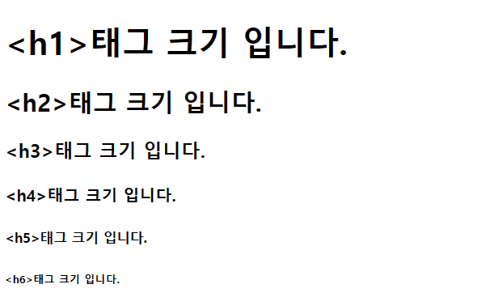
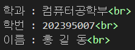
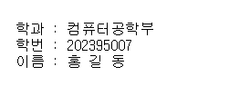

기본 문서태그
<h1> ~ <h6>
<h1>~<h6>태그는 제목을 작성하는 태그
- 1~6까지 사용하고 각각 크기가 다르다(숫자가 커질수록 크기가 작아짐)
- 기본적으로 글씨가 두꺼움
- 이중 태그

<p>
<p>태그는 문단(단락) 태그. 줄바꿈 포함
- 띄어쓰기는 연속으로 한 번 까지 가능함
- 이중 태그

<br>
<br>태그는 줄바꿈 태그
- 문단 뒤에 <br>태그를 붙히면 줄바꿈이 됨
- 단일 태그

<hr>
<hr>태그는 줄을 긋는 태그
- 기본 1픽셀로 지정
- 자동 줄바꿈
- 단일 태그
<blockquote>
<blockquote>태그는 인용문 표시 태그
- 다른 내용과 구분하기 위해 들여쓰기를 함
- 이중 태그
<pre>
<pre>태그는 입력하는 그대로 화면에 표시
- 띄어쓰기도 여러번 가능함
- <p>태그보다 글씨가 작고, 줄 간격이 좁음
- 이중 태그

<div>
<div>태그는 구역을 지정하는 태그
- 이론상 CSS 제작 시 HTML에서 가장 중요한 태그
- 스타일을 입히기 상대적으로 쉬움
- 이중태그